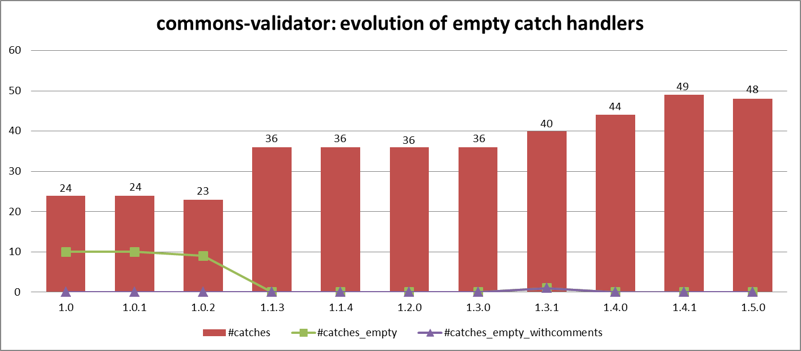

Trends on Empty Exception Handlers for Java Open Source Libraries
ERA track @ SANER 2017
You can download here the data used in the paper. For each release you will find:
- 1 XML file - data collected from the source code through srcML
- 1 CSV file - custom measurements extracted from the XML file
bcel
| Metric | 5.2 |
|---|---|
| #catches | 122 |
| #catches_empty | 15 |
| #catches_empty_withcomments | 1 |
| %Percentage empty catches | 12.30 |
| %Percentage empty catches with comments | 6.67 |
bsf
| Metric | 2.4.0 | 3.1 |
|---|---|---|
| #catches | 78 | 21 |
| #catches_empty | 5 | 2 |
| #catches_empty_withcomments | 1 | 0 |
| %Percentage empty catches | 6.41 | 9.52 |
| %Percentage empty catches with comments | 20 | 0 |
commons-beanutils
| Metric | 1.0 | 1.1 | 1.2 | 1.3 | 1.4 | 1.4.1 | 1.5 | 1.6 | 1.6.1 | 1.7.0 | 1.8.0-BETA | 1.8.0 | 1.8.1 | 1.8.2 | 1.8.3 | 1.9.0 | 1.9.1 | 1.9.2 |
|---|---|---|---|---|---|---|---|---|---|---|---|---|---|---|---|---|---|---|
| #catches | 14 | 18 | 20 | 41 | 71 | 72 | 82 | 91 | 95 | 138 | 151 | 159 | 161 | 161 | 161 | 163 | 164 | 164 |
| #catches_empty | 4 | 5 | 6 | 7 | 8 | 9 | 12 | 14 | 16 | 20 | 13 | 14 | 14 | 14 | 14 | 14 | 15 | 15 |
| #catches_empty_withcomments | 2 | 2 | 2 | 1 | 2 | 3 | 4 | 5 | 5 | 7 | 13 | 14 | 14 | 14 | 14 | 14 | 15 | 15 |
| %Percentage empty catches | 28.57 | 27.78 | 30.00 | 17.07 | 11.27 | 12.50 | 14.63 | 15.38 | 16.84 | 14.49 | 8.61 | 8.81 | 8.70 | 8.70 | 8.70 | 8.59 | 9.15 | 9.15 |
| %Percentage empty catches with comments | 50.00 | 40.00 | 33.33 | 14.29 | 25.00 | 33.33 | 33.33 | 35.71 | 31.25 | 35.00 | 100.00 | 100.00 | 100.00 | 100.00 | 100.00 | 100.00 | 100.00 | 100.00 |
commons-chain
| Metric | 1.0 | 1.1 | 1.2 |
|---|---|---|---|
| #catches | 16 | 17 | 17 |
| #catches_empty | 3 | 3 | 3 |
| #catches_empty_withcomments | 3 | 3 | 3 |
| %Percentage empty catches | 18.75 | 17.65 | 17.65 |
| %Percentage empty catches with comments | 100 | 100 | 100 |
commons-cli
| Metric | 1.0 | 1.1 | 1.2 | 1.3 | 1.3.1 |
|---|---|---|---|---|---|
| #catches | 6 | 9 | 9 | 11 | 11 |
| #catches_empty | 0 | 1 | 1 | 2 | 2 |
| #catches_empty_withcomments | 0 | 1 | 1 | 2 | 2 |
| %Percentage empty catches | 0.00 | 11.11 | 11.11 | 18.18 | 18.18 |
| %Percentage empty catches with comments | 0.00 | 100 | 100 | 100 | 100 |
commons-codec
| Metric | 1.1 | 1.2 | 1.3 | 1.4 | 1.5 | 1.6 | 1.7 | 1.8 | 1.9 | 1.10 |
|---|---|---|---|---|---|---|---|---|---|---|
| #catches | 4 | 7 | 14 | 18 | 18 | 19 | 15 | 15 | 15 | 23 |
| #catches_empty | 0 | 0 | 0 | 0 | 0 | 0 | 0 | 0 | 0 | 0 |
| #catches_empty_withcomments | 0 | 0 | 0 | 0 | 0 | 0 | 0 | 0 | 0 | 0 |
| %Percentage empty catches | 0.00 | 0.00 | 0.00 | 0.00 | 0.00 | 0.00 | 0.00 | 0.00 | 0.00 | 0.00 |
| %Percentage empty catches with comments | 0.00 | 0.00 | 0.00 | 0.00 | 0.00 | 0.00 | 0.00 | 0.00 | 0.00 | 0.00 |
commons-collections
| Metric | 1.0 | 2.0 | 2.1 | 2.1.1 | 3.0 | 3.1 | 3.2 | 3.2.1 | 3.2.2 | 4.0-alpha1 | 4.0 | 4.1 |
|---|---|---|---|---|---|---|---|---|---|---|---|---|
| #catches | 19 | 21 | 26 | 26 | 50 | 55 | 60 | 60 | 63 | 35 | 35 | 35 |
| #catches_empty | 3 | 3 | 4 | 4 | 5 | 6 | 6 | 6 | 7 | 7 | 7 | 7 |
| #catches_empty_withcomments | 3 | 3 | 4 | 4 | 3 | 5 | 5 | 5 | 6 | 7 | 7 | 7 |
| %Percentage empty catches | 15.79 | 14.29 | 15.38 | 15.38 | 10.00 | 10.91 | 10.00 | 10.00 | 11.11 | 20.00 | 20.00 | 20.00 |
| %Percentage empty catches with comments | 100.00 | 100.00 | 100.00 | 100.00 | 60.00 | 83.33 | 83.33 | 83.33 | 85.71 | 100.00 | 100.00 | 100.00 |
commons-compress
| Metric | 1.0 | 1.1 | 1.2 | 1.3 | 1.4 | 1.4.1 | 1.5 | 1.6 | 1.7 | 1.8 | 1.8.1 | 1.9 | 1.10 |
|---|---|---|---|---|---|---|---|---|---|---|---|---|---|
| #catches | 25 | 27 | 28 | 33 | 43 | 43 | 45 | 46 | 42 | 46 | 46 | 46 | 48 |
| #catches_empty | 3 | 3 | 4 | 5 | 5 | 5 | 6 | 6 | 2 | 2 | 2 | 2 | 2 |
| #catches_empty_withcomments | 3 | 3 | 4 | 5 | 5 | 5 | 6 | 6 | 2 | 2 | 2 | 2 | 2 |
| %Percentage empty catches | 12.00 | 11.11 | 14.29 | 15.15 | 11.63 | 11.63 | 13.33 | 13.04 | 4.76 | 4.35 | 4.35 | 4.35 | 4.17 |
| %Percentage empty catches with comments | 100 | 100 | 100 | 100 | 100 | 100 | 100 | 100 | 100 | 100 | 100 | 100 | 100 |
commons-configuration
| Metric | 1.0 | 1.1 | 1.2 | 1.3 | 1.4 | 1.5 | 1.6 | 1.7 | 1.8 | 1.9 | 1.1 | 2.0-alpha1 | 2.0-alpha2 | 2.0-beta1 | 2.0-beta2 |
|---|---|---|---|---|---|---|---|---|---|---|---|---|---|---|---|
| #catches | 56 | 98 | 113 | 126 | 131 | 125 | 133 | 167 | 151 | 152 | 152 | 125 | 125 | 126 | 126 |
| #catches_empty | 1 | 0 | 0 | 1 | 2 | 2 | 2 | 1 | 1 | 0 | 0 | 2 | 2 | 1 | 1 |
| #catches_empty_withcomments | 0 | 0 | 0 | 1 | 2 | 2 | 2 | 1 | 1 | 0 | 0 | 2 | 2 | 1 | 1 |
| %Percentage empty catches | 1.79 | 0.00 | 0.00 | 0.79 | 1.53 | 1.60 | 1.50 | 0.60 | 0.66 | 0.00 | 0.00 | 1.60 | 1.60 | 0.79 | 0.79 |
| %Percentage empty catches with comments | 0 | 0.00 | 0.00 | 100 | 100 | 100 | 100 | 100 | 100 | 0.00 | 0.00 | 100 | 100 | 100 | 100 |
commons-daemon

| Metric | 1.0 | 1.0.1 | 1.0.2 | 1.0.3 | 1.0.4 | 1.0.5 | 1.0.6 | 1.0.7 | 1.0.8 | 1.0.9 | 1.0.10 | 1.0.11 | 1.0.12 | 1.0.13 | 1.0.14 | 1.0.15 |
|---|---|---|---|---|---|---|---|---|---|---|---|---|---|---|---|---|
| #catches | 5 | 6 | 6 | 6 | 9 | 9 | 11 | 12 | 12 | 12 | 12 | 12 | 12 | 12 | 12 | 12 |
| #catches_empty | 0 | 1 | 1 | 1 | 3 | 3 | 4 | 5 | 5 | 5 | 5 | 5 | 5 | 5 | 5 | 5 |
| #catches_empty_withcomments | 0 | 1 | 1 | 1 | 3 | 3 | 4 | 4 | 4 | 4 | 4 | 4 | 4 | 4 | 4 | 4 |
| %Percentage empty catches | 0.00 | 16.67 | 16.67 | 16.67 | 33.33 | 33.33 | 36.36 | 41.67 | 41.67 | 41.67 | 41.67 | 41.67 | 41.67 | 41.67 | 41.67 | 41.67 |
| %Percentage empty catches with comments | 0.00 | 100 | 100 | 100 | 100 | 100 | 100 | 80 | 80 | 80 | 80 | 80 | 80 | 80 | 80 | 80 |
commons-dbcp
| Metric | 1.0 | 1.1 | 1.2 | 1.2.1 | 1.2.2 | 1.3 | 1.4 | 2 | 2.0.1 | 2.1 | 2.1.1 |
|---|---|---|---|---|---|---|---|---|---|---|---|
| #catches | 109 | 89 | 421 | 421 | 424 | 650 | 770 | 788 | 784 | 788 | 788 |
| #catches_empty | 32 | 15 | 19 | 19 | 21 | 31 | 31 | 30 | 30 | 32 | 32 |
| #catches_empty_withcomments | 31 | 13 | 15 | 15 | 16 | 22 | 22 | 25 | 25 | 27 | 27 |
| %Percentage empty catches | 29.36 | 16.85 | 4.51 | 4.51 | 4.95 | 4.77 | 4.03 | 3.81 | 3.83 | 4.06 | 4.06 |
| %Percentage empty catches with comments | 96.88 | 86.67 | 78.95 | 78.95 | 76.19 | 70.97 | 70.97 | 83.33 | 83.33 | 84.38 | 84.38 |
commons-dbutils
| Metric | 1.0 | 1.1 | 1.2 | 1.3 | 1.4 | 1.5 | 1.6 |
|---|---|---|---|---|---|---|---|
| #catches | 20 | 22 | 27 | 27 | 29 | 26 | 31 |
| #catches_empty | 5 | 5 | 5 | 5 | 5 | 5 | 5 |
| #catches_empty_withcomments | 5 | 5 | 5 | 5 | 5 | 5 | 5 |
| %Percentage empty catches | 25.00 | 22.73 | 18.52 | 18.52 | 17.24 | 19.23 | 16.13 |
| %Percentage empty catches with comments | 100 | 100 | 100 | 100 | 100 | 100 | 100 |
commons-digester
| Metric | 1.0 | 1.1 | 1.1.1 | 1.2 | 1.3 | 1.4 | 1.4.1 | 1.5 | 1.6 | 1.7 | 1.8 | 1.8.1 | 2 | 2.1 | 3 | 3.1 | 3.2 |
|---|---|---|---|---|---|---|---|---|---|---|---|---|---|---|---|---|---|
| #catches | 12 | 22 | 22 | 25 | 26 | 30 | 30 | 33 | 53 | 54 | 58 | 58 | 58 | 61 | 70 | 70 | 71 |
| #catches_empty | 1 | 1 | 1 | 1 | 1 | 1 | 1 | 1 | 2 | 2 | 3 | 3 | 3 | 2 | 3 | 1 | 1 |
| #catches_empty_withcomments | 1 | 1 | 1 | 1 | 1 | 1 | 1 | 1 | 2 | 2 | 3 | 3 | 3 | 2 | 3 | 1 | 1 |
| %Percentage empty catches | 8.33 | 4.55 | 4.55 | 4.00 | 3.85 | 3.33 | 3.33 | 3.03 | 3.77 | 3.70 | 5.17 | 5.17 | 5.17 | 3.28 | 4.29 | 1.43 | 1.41 |
| %Percentage empty catches with comments | 100 | 100 | 100 | 100 | 100 | 100 | 100 | 100 | 100 | 100 | 100 | 100 | 100 | 100 | 100 | 100 | 100 |
commons-discovery
| Metric | 0.1 | 0.2 | 0.4 | 0.5 |
|---|---|---|---|---|
| #catches | 20 | 20 | 24 | 27 |
| #catches_empty | 7 | 7 | 8 | 9 |
| #catches_empty_withcomments | 7 | 7 | 7 | 8 |
| %Percentage empty catches | 35.00 | 35.00 | 33.33 | 33.33 |
| %Percentage empty catches with comments | 100.00 | 100.00 | 87.50 | 88.89 |
commons-el
| Metric | 1.0 |
|---|---|
| #catches | 44 |
| #catches_empty | 1 |
| #catches_empty_withcomments | 0 |
| %Percentage empty catches | 2.27 |
| %Percentage empty catches with comments | 0 |
commons-email
| Metric | 1.0 | 1.1 | 1.2 | 1.3 | 1.3.1 | 1.3.2 | 1.3.3 | 1.4 |
|---|---|---|---|---|---|---|---|---|
| #catches | 19 | 24 | 24 | 30 | 30 | 30 | 32 | 32 |
| #catches_empty | 1 | 2 | 3 | 2 | 2 | 2 | 2 | 2 |
| #catches_empty_withcomments | 1 | 2 | 3 | 2 | 2 | 2 | 2 | 2 |
| %Percentage empty catches | 5.26 | 8.33 | 12.50 | 6.67 | 6.67 | 6.67 | 6.25 | 6.25 |
| %Percentage empty catches with comments | 100 | 100 | 100 | 100 | 100 | 100 | 100 | 100 |
commons-exec
| Metric | 1.0 | 1.0.1 | 1.1 | 1.2 | 1.3 |
|---|---|---|---|---|---|
| #catches | 26 | 27 | 28 | 28 | 23 |
| #catches_empty | 10 | 10 | 11 | 8 | 3 |
| #catches_empty_withcomments | 9 | 9 | 10 | 7 | 2 |
| %Percentage empty catches | 38.46 | 37.04 | 39.29 | 28.57 | 13.04 |
| %Percentage empty catches with comments | 90.00 | 90.00 | 90.91 | 87.50 | 66.67 |
commons-fileupload

| Metric | 1.0-beta-1 | 1.0-rc1 | 1.0 | 1.1 | 1.1.1 | 1.2 | 1.2.1 | 1.2.2 | 1.3 | 1.3.1 |
|---|---|---|---|---|---|---|---|---|---|---|
| #catches | 10 | 11 | 11 | 12 | 12 | 16 | 16 | 17 | 25 | 23 |
| #catches_empty | 3 | 5 | 5 | 4 | 4 | 5 | 5 | 6 | 8 | 6 |
| #catches_empty_withcomments | 3 | 5 | 5 | 4 | 4 | 5 | 5 | 6 | 8 | 6 |
| %Percentage empty catches | 30.00 | 45.45 | 45.45 | 33.33 | 33.33 | 31.25 | 31.25 | 35.29 | 32.00 | 26.09 |
| %Percentage empty catches with comments | 100 | 100 | 100 | 100 | 100 | 100 | 100 | 100 | 100 | 100 |
commons-httpclient
| Metric | 2.0-alpha2 | 2.0-beta1 | 2.0-beta2 | 2.0-final | 2.0-rc1 | 2.0-rc2 | 2.0-rc3 | 2.0 | 2.0.1 | 2.0.2 | 3.0-alpha1 | 3.0-alpha2 | 3.0-beta1 | 3.0-rc1 | 3.0-rc2 | 3.0-rc3 | 3.0-rc4 | 3.0 | 3.0.1 |
|---|---|---|---|---|---|---|---|---|---|---|---|---|---|---|---|---|---|---|---|
| #catches | 93 | 95 | 92 | 100 | 92 | 95 | 100 | 100 | 98 | 98 | 105 | 103 | 106 | 107 | 107 | 107 | 107 | 107 | 107 |
| #catches_empty | 6 | 6 | 6 | 6 | 6 | 6 | 6 | 6 | 6 | 6 | 10 | 10 | 10 | 10 | 10 | 10 | 11 | 11 | 11 |
| #catches_empty_withcomments | 6 | 6 | 6 | 5 | 6 | 5 | 5 | 5 | 5 | 5 | 6 | 6 | 6 | 6 | 6 | 6 | 6 | 6 | 6 |
| %Percentage empty catches | 6.45 | 6.32 | 6.52 | 6.00 | 6.52 | 6.32 | 6.00 | 6.00 | 6.12 | 6.12 | 9.52 | 9.71 | 9.43 | 9.35 | 9.35 | 9.35 | 10.28 | 10.28 | 10.28 |
| %Percentage empty catches with comments | 100.00 | 100.00 | 100.00 | 83.33 | 100.00 | 83.33 | 83.33 | 83.33 | 83.33 | 83.33 | 60.00 | 60.00 | 60.00 | 60.00 | 60.00 | 60.00 | 54.55 | 54.55 | 54.55 |
commons-io
| Metric | 1.0 | 1.1 | 1.2 | 1.3 | 1.3.1 | 1.3.2 | 1.4 | 2 | 2.0.1 | 2.1 | 2.2 | 2.3 | 2.4 |
|---|---|---|---|---|---|---|---|---|---|---|---|---|---|
| #catches | 9 | 11 | 15 | 17 | 17 | 17 | 21 | 63 | 63 | 64 | 66 | 66 | 68 |
| #catches_empty | 6 | 6 | 6 | 6 | 6 | 6 | 7 | 11 | 11 | 11 | 13 | 13 | 15 |
| #catches_empty_withcomments | 1 | 5 | 5 | 6 | 6 | 6 | 6 | 7 | 7 | 7 | 9 | 9 | 11 |
| %Percentage empty catches | 66.67 | 54.55 | 40.00 | 35.29 | 35.29 | 35.29 | 33.33 | 17.46 | 17.46 | 17.19 | 19.70 | 19.70 | 22.06 |
| %Percentage empty catches with comments | 16.67 | 83.33 | 83.33 | 100.00 | 100.00 | 100.00 | 85.71 | 63.64 | 63.64 | 63.64 | 69.23 | 69.23 | 73.33 |
commons-jcs
| Metric | 1.3 | 2.0 |
|---|---|---|
| #catches | 365 | 398 |
| #catches_empty | 30 | 29 |
| #catches_empty_withcomments | 28 | 29 |
| %Percentage empty catches | 8.22 | 7.29 |
| %Percentage empty catches with comments | 93.33 | 100 |
commons-jexl
| Metric | 1.1 | 2.1.1 | 3.0 |
|---|---|---|---|
| #catches | 73 | 52 | 75 |
| #catches_empty | 1 | 4 | 6 |
| #catches_empty_withcomments | 1 | 4 | 6 |
| %Percentage empty catches | 1.37 | 7.69 | 8.00 |
| %Percentage empty catches with comments | 100 | 100 | 100 |
commons-jxpath
| Metric | 1.0 | 1.1 | 1.2 | 1.3 |
|---|---|---|---|---|
| #catches | 67 | 76 | 77 | 83 |
| #catches_empty | 9 | 9 | 8 | 11 |
| #catches_empty_withcomments | 3 | 8 | 7 | 11 |
| %Percentage empty catches | 13.43 | 11.84 | 10.39 | 13.25 |
| %Percentage empty catches with comments | 33.33 | 88.89 | 87.50 | 100.00 |
commons-lang
| Metric | 1.0 | 1.0.1 | 2 | 2.1 | 2.2 | 2.3 | 2.4 | 2.5 | 2.6 | 3 | 3.0.1 | 3.1 | 3.2 | 3.2.1 | 3.3 | 3.3.1 | 3.3.2 | 3.4 |
|---|---|---|---|---|---|---|---|---|---|---|---|---|---|---|---|---|---|---|
| #catches | 31 | 31 | 54 | 61 | 76 | 77 | 80 | 96 | 101 | 78 | 84 | 84 | 84 | 84 | 84 | 84 | 84 | 86 |
| #catches_empty | 22 | 22 | 34 | 37 | 46 | 45 | 46 | 56 | 58 | 24 | 24 | 24 | 26 | 26 | 26 | 26 | 26 | 28 |
| #catches_empty_withcomments | 6 | 6 | 7 | 10 | 46 | 45 | 46 | 54 | 54 | 24 | 24 | 24 | 26 | 26 | 26 | 26 | 26 | 28 |
| %Percentage empty catches | 70.97 | 70.97 | 62.96 | 60.66 | 60.53 | 58.44 | 57.50 | 58.33 | 57.43 | 30.77 | 28.57 | 28.57 | 30.95 | 30.95 | 30.95 | 30.95 | 30.95 | 32.56 |
| %Percentage empty catches with comments | 27.27 | 27.27 | 20.59 | 27.03 | 100.00 | 100.00 | 100.00 | 96.43 | 93.10 | 100.00 | 100.00 | 100.00 | 100.00 | 100.00 | 100.00 | 100.00 | 100.00 | 100.00 |
commons-launcher

| Metric | 0.9 | 1.1 |
|---|---|---|
| #catches | 20 | 20 |
| #catches_empty | 8 | 8 |
| #catches_empty_withcomments | 3 | 3 |
| %Percentage empty catches | 40.00 | 40.00 |
| %Percentage empty catches with comments | 37.5 | 37.5 |
commons-logging
| Metric | 1.0 | 1.0.1 | 1.0.2 | 1.0.3 | 1.0.4 | 1.1 | 1.1.1 | 1.1.2 | 1.1.3 | 1.2 |
|---|---|---|---|---|---|---|---|---|---|---|
| #catches | 19 | 22 | 23 | 27 | 31 | 54 | 56 | 56 | 56 | 54 |
| #catches_empty | 5 | 7 | 8 | 9 | 11 | 4 | 4 | 4 | 4 | 5 |
| #catches_empty_withcomments | 0 | 2 | 3 | 4 | 6 | 4 | 4 | 4 | 4 | 5 |
| %Percentage empty catches | 26.32 | 31.82 | 34.78 | 33.33 | 35.48 | 7.41 | 7.14 | 7.14 | 7.14 | 9.26 |
| %Percentage empty catches with comments | 0.00 | 33.33 | 50.00 | 60.00 | 71.43 | 100.00 | 100.00 | 100.00 | 100.00 | 100.00 |
commons-net
| Metric | 1.0.0 | 1.1.0 | 1.2.0 | 1.2.1 | 1.2.2 | 1.3.0 | 1.4.0 | 1.4.1 | 2 | 2.2 | 3 | 3.0.1 | 3.1 | 3.2 | 3.3 | 3.4 |
|---|---|---|---|---|---|---|---|---|---|---|---|---|---|---|---|---|
| #catches | 34 | 52 | 60 | 60 | 60 | 61 | 67 | 67 | 71 | 80 | 73 | 74 | 76 | 76 | 76 | 81 |
| #catches_empty | 5 | 10 | 12 | 12 | 12 | 12 | 10 | 10 | 16 | 18 | 24 | 24 | 27 | 27 | 27 | 32 |
| #catches_empty_withcomments | 3 | 8 | 9 | 9 | 9 | 9 | 7 | 7 | 13 | 13 | 18 | 18 | 21 | 21 | 21 | 32 |
| %Percentage empty catches | 14.71 | 19.23 | 20.00 | 20.00 | 20.00 | 19.67 | 14.93 | 14.93 | 22.54 | 22.50 | 32.88 | 32.43 | 35.53 | 35.53 | 35.53 | 39.51 |
| %Percentage empty catches with comments | 60.00 | 80.00 | 75.00 | 75.00 | 75.00 | 75.00 | 70.00 | 70.00 | 81.25 | 81.25 | 81.82 | 81.82 | 84.00 | 84.00 | 84.00 | 100.00 |
commons-pool
| Metric | 1 | 1.1 | 1.2 | 1.3 | 1.4 | 1.5 | 1.5.1 | 1.5.2 | 1.5.3 | 1.5.4 | 1.5.5 | 1.5.6 | 1.5.7 | 1.6 | 2 | 2.1 | 2.2 | 2.3 | 2.4 | 2.4.1 | 2.4.2 |
|---|---|---|---|---|---|---|---|---|---|---|---|---|---|---|---|---|---|---|---|---|---|
| #catches | 29 | 35 | 35 | 35 | 58 | 52 | 52 | 52 | 52 | 52 | 52 | 52 | 52 | 52 | 52 | 56 | 56 | 55 | 56 | 56 | 56 |
| #catches_empty | 17 | 18 | 18 | 20 | 34 | 27 | 27 | 27 | 27 | 27 | 22 | 22 | 22 | 22 | 8 | 8 | 8 | 8 | 8 | 8 | 8 |
| #catches_empty_withcomments | 17 | 18 | 18 | 20 | 34 | 27 | 27 | 27 | 27 | 27 | 22 | 22 | 22 | 22 | 8 | 8 | 8 | 8 | 8 | 8 | 8 |
| %Percentage empty catches | 58.62 | 51.43 | 51.43 | 57.14 | 58.62 | 51.92 | 51.92 | 51.92 | 51.92 | 51.92 | 42.31 | 42.31 | 42.31 | 42.31 | 15.38 | 14.29 | 14.29 | 14.55 | 14.29 | 14.29 | 14.29 |
| %Percentage empty catches with comments | 100 | 100 | 100 | 100 | 100 | 100 | 100 | 100 | 100 | 100 | 100 | 100 | 100 | 100 | 100 | 100 | 100 | 100 | 100 | 100 | 100 |
commons-primitives
| Metric | 1.0 |
|---|---|
| #catches | 2 |
| #catches_empty | 0 |
| #catches_empty_withcomments | 0 |
| %Percentage empty catches | 0.00 |
| %Percentage empty catches with comments | 0.00 |
commons-proxy
| Metric | 1.0 |
|---|---|
| #catches | 27 |
| #catches_empty | 1 |
| #catches_empty_withcomments | 1 |
| %Percentage empty catches | 3.70 |
| %Percentage empty catches with comments | 100 |
commons-scxml
| Metric | 0.5 | 0.6 | 0.7 | 0.8 | 0.9 |
|---|---|---|---|---|---|
| #catches | 67 | 72 | 78 | 78 | 80 |
| #catches_empty | 0 | 0 | 0 | 0 | 0 |
| #catches_empty_withcomments | 0 | 0 | 0 | 0 | 0 |
| %Percentage empty catches | 0.00 | 0.00 | 0.00 | 0.00 | 0.00 |
| %Percentage empty catches with comments | 0.00 | 0.00 | 0.00 | 0.00 | 0.00 |
commons-vfs
| Metric | 1.0 | 2.0 |
|---|---|---|
| #catches | 160 | 217 |
| #catches_empty | 8 | 14 |
| #catches_empty_withcomments | 3 | 14 |
| %Percentage empty catches | 5.00 | 6.45 |
| %Percentage empty catches with comments | 37.5 | 100 |
commons-validator
| Metric | 1.0 | 1.0.1 | 1.0.2 | 1.1.3 | 1.1.4 | 1.2.0 | 1.3.0 | 1.3.1 | 1.4.0 | 1.4.1 | 1.5.0 |
|---|---|---|---|---|---|---|---|---|---|---|---|
| #catches | 24 | 24 | 23 | 36 | 36 | 36 | 36 | 40 | 44 | 49 | 48 |
| #catches_empty | 10 | 10 | 9 | 0 | 0 | 0 | 0 | 1 | 0 | 0 | 0 |
| #catches_empty_withcomments | 0 | 0 | 0 | 0 | 0 | 0 | 0 | 1 | 0 | 0 | 0 |
| %Percentage empty catches | 41.67 | 41.67 | 39.13 | 0.00 | 0.00 | 0.00 | 0.00 | 2.50 | 0.00 | 0.00 | 0.00 |
| %Percentage empty catches with comments | 0 | 0 | 0 | 0.00 | 0.00 | 0.00 | 0.00 | 0.00 | 0.00 | 0.00 | 0.00 |